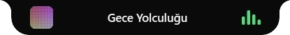
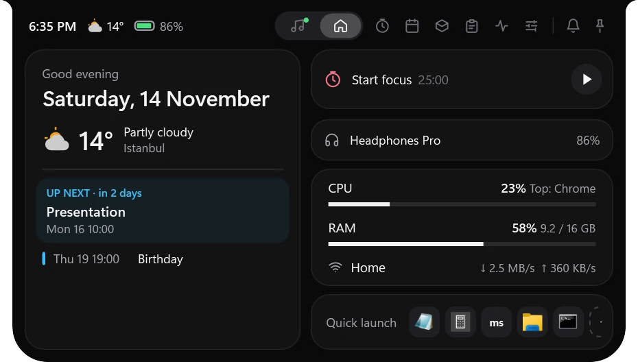
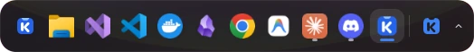
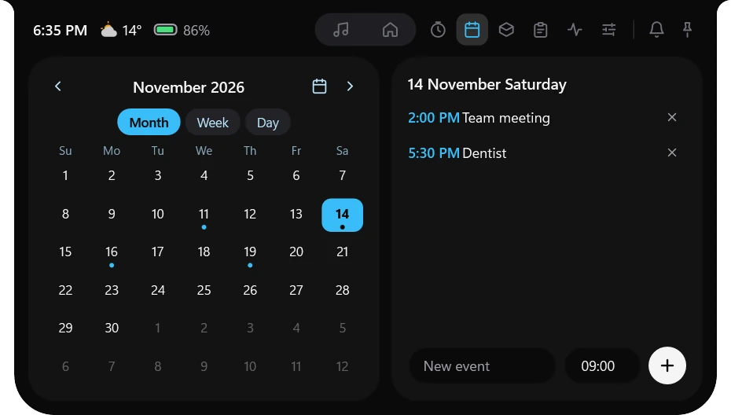
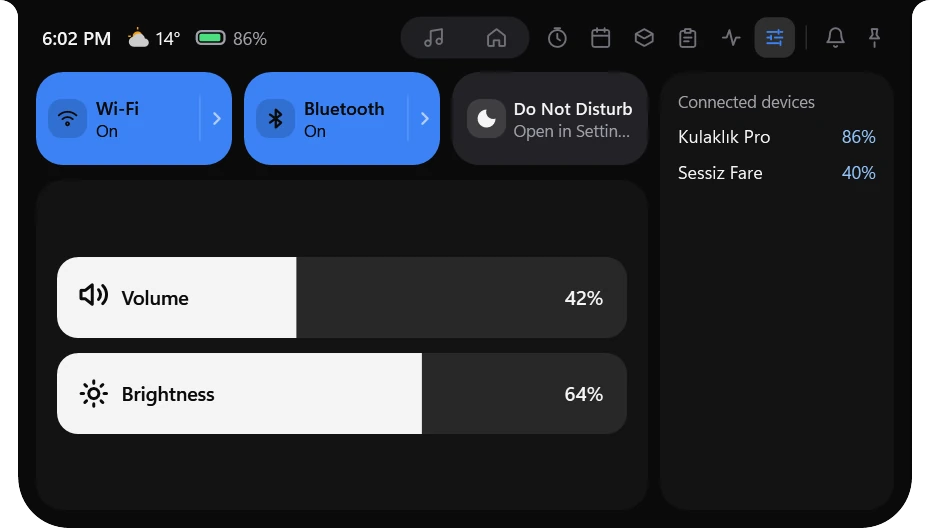
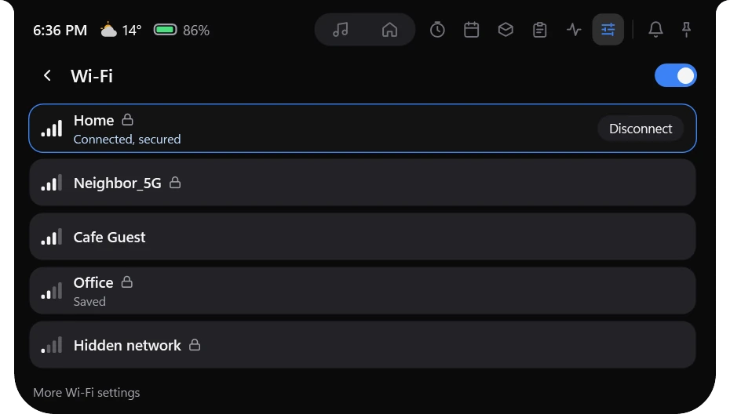

Multiple displays
A separate notch and dock on each monitor, each at its own DPI. Fullscreen video on a side display doesn't hide Koy on the main one.


A spring-animated notch and a dock that replaces the taskbar. One process, no browser engine, easy on the CPU at idle.
Windows 11 · Free and open source (GPLv3)

Move the mouse to the top edge and the notch springs open. Music, calendar, Wi-Fi and system status, all in one place.
Now playing, headphone battery, CPU and memory, network speed and quick launch at a glance. Music comes from Spotify, your browser or Windows Media Player.
Month, week and day views, a timer, stopwatch and Pomodoro. Events stay on your computer. When time is up, the notch shakes to let you know.
Wi-Fi, Bluetooth, Do Not Disturb, volume and brightness. Drag the tiles into any order you like.
Pick a network from the notch, just like in Windows. Connect to Bluetooth devices here too.
When closed, the notch stays small: cover art and a waveform if music is playing, otherwise the clock and battery. A brief indicator appears when volume or brightness changes.
There are also Focus, Shelf (drag and drop files and text), Clipboard and System pages.



A floating capsule or a full-width bar. The Windows taskbar hides and the dock takes over.
Competitors run on web engines. Koy is native C# and WPF, and keeps itself honest by measuring.
A separate notch and dock on each monitor, each at its own DPI. Fullscreen video on a side display doesn't hide Koy on the main one.
Even if Koy closes or crashes, the Windows taskbar comes back within seconds.
All global shortcuts can be customized. If two shortcuts clash, Koy tells you.
Follows the Windows theme, or pick one yourself. The accent color is yours too.
The language changes instantly, without restarting the app.
Uninstall from inside Koy in one step. Keep your settings if you like; your taskbar goes back to normal.
Requires Windows 11 (22H2 or later). Koy is free, and every release is built on GitHub Actions after the tests pass.
Setup installs in one click and updates itself. Prefer no install? There's a portable zip.
Koy isn't code-signed yet. If you downloaded the file only from GitHub Releases, choose More info, then Run anyway. Don't run a Koy file that came from anywhere else.
Compare the resulting hash with SHA256SUMS.txt in the release.
Get-FileHash .\Koy-win-Setup.exe -Algorithm SHA256